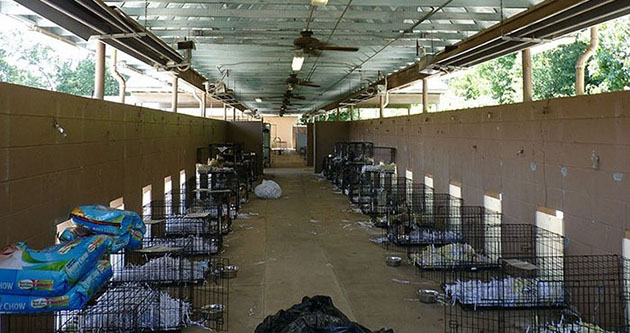

Commercial dog breeding facilities or “puppy mills” are defined by overcrowding and unsanitary conditions. This is primarily due to the overwhelming number of illegal mills in addition to licensed mills that fail to abide legal regulations.
Puppy Mill Populations
The true population of puppy mill dogs is unknown. Mill populations are in constant flux due to births, sales, deaths, etc. Additionally, the federal agency in charge of keeping those numbers – the U.S. Department of Agriculture (USDA) – stopped making them accessible to the public in 2017.
- Legal facilities report over a million puppies born in a year.
- Upwards of 4 million puppies are born annually among all facilities, legal and illegal.
- 167,388 breeding dogs lived in licensed facilities in 2017.
- By current estimates, the breeding dog population in legal mills exceeds 194,000 animals.
- 660,000 is the estimated total for breeding dogs in all puppy mills, legal and illegal.
- 30% of breeding animals are male.

Breeding in Puppy Mills
Most breeding dogs in mills are female. They usually breed at much earlier ages than is recommended by veterinarians and animal specialists, which can lead to health problems; some of these problems may be passed down through generations of their offspring.
- 460,000 total breeding animals are female.
- Some puppy mills breed dogs as early as 4 months of age.
- 6 years is the average age breeding females stop producing.
- A female breeding dog’s “career” may last a little more than 5.5 years.
- 9.4 is the average number of puppies each female produces in a year.
- 77,000 breeding females are “worn-out” each year and replaced with new dogs.
Health in Puppy Mills
Dogs born and/or kept in commercial breeding facilities exhibit significantly higher rates of health problems both mental and physical. Specialists attribute these health problems to poor breeding, malnutrition, lack of socialization and other improper care.
-
Mill puppies are 41.6% more likely to develop health issues than the general population of dogs.
-
Common problems in mills include dogs living in their own filth with multiple animals to a cage.
-
Studies by animal behavioral scientists have shown that mill puppies exhibit behavior consistent with poor mental health into adulthood.
- Mill dogs are more likely to struggle with house-training
- Mill dogs exhibit higher rates of fear, both social and non-social.
- Mill dogs have also been observed to exhibit low energy and lack of trainability.
Common Hereditary Diseases
Improper breeding practices can result in disorders and diseases that may be passed from one generation to the next. Some of these disorders are not immediately obvious; some may not make themselves known until the animal has reached a certain age, which is why people who purchase these animals may not realize right away that their puppy is ill.
- Epilepsy
- Heart disease
- Kidney disease
- Deafness
- Respiratory defects
- Musculoskeletal disorders
- Hip dysplasia
- Luxating patellas
- Polydactyly
- Endocrine disorders
- Diabetes
- Hyperthyroidism
- Cushing disease
- Blood disorders
- Anemia
- Von Willebrand disease
- Hemophilia
- Eye problems
- Retinal atrophy
- Glaucoma
- Cataracts